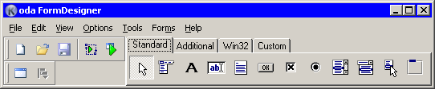

This is the main window. Here is main menu with all commands available in Koda, customizable toolbar and components palette. Palette is separated to four tabs: this is not highly meaningful, more for convenience, for shortening palette).
To create new control on the form, click on desired control in palette, then click on design form - control will be inserted.